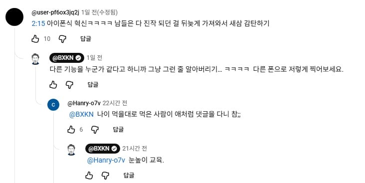

ㅋㅋㅋㅋㅋㅋㅋㅋㅋㅋㅋㅋㅋ

ㅋㅋㅋㅋㅋㅋㅋㅋㅋㅋㅋㅋㅋ
그냥 하나만 생각하면 됨
아이폰 유저들 기분이 좋아졌다
그걸로 충분히 살만한 요소임
언제나 기분은 가장 중요한 요소고, 미국인들이 트럼프 뽑은 이유기도 함
영포티는 왜 이렇게 애플에 환장 하는거냐?
젊은애들이 쓰니까 따라쓰는거임 이제 포티형들이 마구마구 써서 젊은애들도 애플만 사진 않더라
갤럭시 아님 아이폰인데 그냥 사고 싶은거 사는거지 뭘 또 따라 쓰냐
이러다 갤럭시 점유율 높아지면 20년 갤럭시좋아 아조시도 따라산다 하겠네
그건 아니지 아이폰이 20년 정도 전에 나온거고 따라 쓰는걸로 따지면 영포티폰을 젊은애들이 따라 쓰는거지
저사람 50대임 영피프티
그치만 통계상 40대에서 아이폰 유저들은 한줌단인걸
통계적으로 영포티는 애플이 아니라 삼성에 환장하고 있어
아니 40대 말고 영포티
돈은 존나 많은가보다
난 저리되지 말아야지
영포티블 듀오답네요
아직도?
저분은 아직도 통쾌영상 긁히는 댓글에 댓글달고 싸우고있음ㅋㅋ
피구왕 통쾌
ㅋㅋ 걍 그러시게 냅둬
잼있자나
걍 병먹금이 진리
통쾌했어요
다른 건 모르겠고 저 fiji 라는 음료? 가 어떤 이미지의 음료인지는 확실히 알겠음
어휴...난 안 사마실래
저거 생수임
진짜 말 존나 안통할것같음
좆병신폰 저리빨면 헐것다
저사람 짤만 보다가 목소리 첨 들어보는데 참.. 그렇네 ㅋㅋ
피곤하게 산다 ㅋㅋ
생긴거 참 통쾌하게 생겼네
좆찐따 특유의 바이브가있음 ㅋㅋ

신앙심으로 봤을 때, 모세와 다윗 엎어놓고, 빠따쳤겠다... 저런 ㅅㅋ들이 존재하니까 제품을 쓰레기로 내놔도 330만원을 헌납해줌 ㅋㅋㅋㅋㅋㅋㅋ
뭔소리야 김치 하거나 브이 하면 찍는 그 기능이 없었단거야?
리뷰할 떄 [그 위치]에 금이 좀 가야 재밌을텐데 ㄲㅂ ㅋㅋ
저게 진성 앱등이 아님? 뇌에 A칩
이식된거 아님?ㄷㄷ
관련 지식이 전혀 없으면서 리뷰를 하니까 저러지ㅋㅋㅋ it 유튜버가 아니라 지나가는 아저씨한테 폰 주고 리뷰 맡긴 수준이라 생각하면 딱히 문제될 건 없음
눈높이 교육 ㅋㅋㅋㅋㅋㅋ